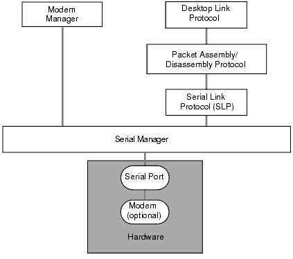
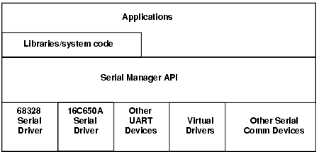
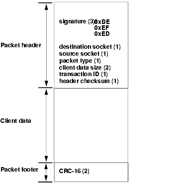

|
The Palm OS® serial communications software provides high-performance serial communications capabilities, including byte-level serial I/O, best-effort packet-based I/O with CRC-16, reliable data transport with retries and acknowledgments, connection management, and modem dialing capabilities.
This chapter helps you understand the different parts of the serial communications system and explains how to use them, discussing these topics:
• Serial Hardware describes the serial port hardware.
• Byte Ordering briefly explains the byte order used for all data.
• Serial Communications Architecture Hierarchy provides an overview of the hierarchy, including an illustration.
• The Serial Manager is responsible for byte-level serial I/O and control of the RS-232, USB, Bluetooth, and IR signals.
• The Connection Manager allows other applications to access, add, and delete connection profiles contained in the Connection preferences panel.
• The Serial Link Protocol provides an efficient mechanism for sending and receiving packets.
• The Serial Link Manager is the Palm OS implementation of the serial link protocol.
NOTE: Although the Palm OS supports Bluetooth connections, Bluetooth requires additional hardware and software that is not available as of this writing.
Serial Hardware

The Palm OS platform device serial port is used for implementing desktop PC connectivity or other external communication. The serial communication is fully interrupt-driven for receiving data. Currently, interrupt-driven transmission of data is not implemented in software, but the hardware does support it. Five external signals are used for this communication:
• SG (signal ground)
• TxD (transmit data)
• RxD (receive data)
• CTS (clear to send)
• RTS (request to send)
Some devices also have a configurable DTR (data terminal ready) signal. Normally, the DTR signal is always high.
The Palm OS platform device has an external connector that provides:
• Five serial communication signals
• General-purpose output
• General-purpose input
• Cradle button input
Palm, Inc. publishes information designed to assist hardware developers in creating devices to interface with the serial communications port on Palm OS platform products. You can obtain this information by joining the Alliance Program and enrolling in the Plugged-In Program. For more information about this program and the serial port hardware, see the Palm™ developer web page at http://www.palm.com/developers/pluggedin/.
Byte Ordering
By convention, all data coming from and going to the Palm OS device use Motorola byte ordering. That is, data of compound types such as UInt16 (2 bytes) and UInt32 (4 bytes), as well as their integral counterparts, are packaged with the most-significant byte at the lowest address. This contrasts with Intel byte ordering.
Serial Communications Architecture Hierarchy
The serial communications software has multiple layers. Higher layers depend on the more primitive functionality provided by lower layers. Applications can use the functionality of all layers. The software consists of the following layers, described in more detail below:
• The Serial Manager, at the lowest layer, deals with the serial port and control of the RS-232 signals, USB signals, or IR signals, providing byte-level serial I/O. See "The Serial Manager".
• The Modem Manager provides modem dialing capabilities.
• The Serial Link Protocol (SLP) provides best-effort packet send and receive capabilities with CRC-16. Packet delivery is left to the higher-level protocols; SLP does not guarantee it. See "The Serial Link Protocol".
• The Packet Assembly/Disassembly Protocol (PADP) sends and receives buffered data. PADP is an efficient protocol featuring variable-size block transfers with robust error checking and automatic retries. Applications don't need access to this part of the system.
• The Desktop Link Protocol (DLP) provides remote access to Palm OS data storage and other subsystems.
DLP facilitates efficient data synchronization between desktop (PC or Macintosh) and Palm OS applications, database backup, installation of code patches, extensions, applications, and other databases, as well as Remote Interapplication Communication (RIAC) and Remote Procedure Calls (RPC).
Figure 5.1 illustrates the communications layers.
Figure 5.1 Palm OS Serial Communications Architecture

The Serial Manager
The Palm OS Serial Manager is responsible for byte-level serial I/O and control of the RS-232, IR, Bluetooth, or USB signals.
NOTE: Although the Palm OS supports Bluetooth connections, Bluetooth requires additional hardware and software that is not available as of this writing.
To ensure that the Serial Manager does not slow down processing of user events, the Serial Manager receives data asynchronously. Sending data is performed synchronously in the current implementation.
This section describes the Serial Manager and how to write the virtual serial drivers that it can use. It covers the following topics:
• Which Serial Manager Version To Use
• Steps for Using the Serial Manager
• Opening a Port
• Closing a Port
• Configuring the Port
• Sending Data
• Receiving Data
• Serial Manager Tips and Tricks
• Writing a Virtual Device Driver
NOTE: You must check which Serial Manager is present before making any calls. See the next section for details. When in doubt, the old Serial Manager API is always available.
Which Serial Manager Version To Use
There are several versions of the Serial Manager available. The first several releases of Palm OS had a Serial Manager that supported only a a single serial port. The API for this Serial Manager is documented in the chapter "Old Serial Manager" of the Palm OS Programmer's API Reference.
If the New Serial Manager Feature Set is present, the Serial Manager has a different set of API (described in the chapter "Serial Manager" of the Palm OS Programmer's API Reference) and can support multiple physical serial hardware devices and virtual serial devices. Physical serial drivers manage communication with the hardware as needed, and virtual drivers manage blocks of data to be sent to some sort of block-based serial code. The detailed operation of drivers is abstracted from the main serial management code.
The newest versions of Palm OS may have an updated version of the new Serial Manager installed. Version 2 provides USB and Bluetooth virtual drivers and provides a few enhancements to the Serial Manager and virtual driver APIs.
When deciding which API to use, note the following:
• If you are writing new application code, best performance is achieved by using the new Serial Manager functions directly, if it is available. The new Serial Manager was introduced in Palm OS 3.3. If it is available on all devices in your target market, consider using new Serial Manager directly.
• The old Serial Manager API is available on all versions of Palm OS; however, it only supports RS-232 communications and low-level IrDA communications.
• The new Serial Manager API supports the IrComm protocol.
• Version 2 of the new Serial Manager supports USB and Bluetooth communication.
• If you write a virtual serial driver, you must use the new Serial Manager API.
Checking the Serial Manager Version
To check whether you can use the new Serial Manager API, check for the existence of the new Serial Manager feature set by calling FtrGet as follows:
err = FtrGet(sysFileCSerialMgr,
sysFtrNewSerialPresent, &value);
If the new Serial Manager is installed, the value parameter is non-zero and the returned error is zero (for no error).
To check for the existence of version 2 of the new Serial Manager, you should check both the Serial Manager version number and the Palm OS version number as follows:
err = FtrGet(sysFileCSerialMgr,
sysFtrNewSerialVersion, &value);
err = FtrGet(sysFtrCreator,
sysFtrNumROMVersion, &romVersion);
If the value parameter is 2, the romVersion is 0x04003000, and both calls to FtrGet return 0 (for no error), version 2 of the new Serial Manager feature set is present.
Version 2 of the new Serial Manager ships with roughly Palm OS 4.0 and higher; however, some Handspring devices that run Palm OS 3.5 have a Serial Manager that returns a version number of 2. This Serial Manager has a slightly different feature set than the Serial Manager that ships with Palm OS 4.0. It contains virtual driver operation codes and virtual driver enhancements to support USB, but it does not contain any of the public Serial Manager functions added in version 2. Therefore, you need to check both the Serial Manager version number and the Palm OS version number before you use the version 2 Serial Manager functions.
About the New Serial Manager
The new Serial Manager manages multiple serial devices with minimal duplication of hardware drivers and data structures. In older Palm systems, the serial library managed any and all connections to the serial hardware in the 68328 (Dragonball) processor, which was the only serial device in the system. Newer systems contain additional serial devices, such as an IR port and possibly a USB port.
The figure below shows the layering of communication software with the Serial Manager and hardware drivers.
Figure 5.2 Serial Communications Architecture with Serial Manager

The Serial Manager maintains a database of installed hardware and currently open connections. Applications, libraries, or other serial communication tasks open different pieces of serial hardware by specifying a logical port number or a four-character code identifying the exact piece of serial hardware that a task wishes to open a connection with. The Serial Manager then performs the proper actions on the hardware through small hardware drivers that are opened dynamically when the port is needed. One hardware driver is needed for each serial communication hardware device available to the Palm unit.
At system restart, the Serial Manager searches for all serial drivers on the Palm device. Serial drivers are independent .prc files with a code resource and a version resource and are of type 'sdrv' (for physical serial drivers) or 'vdrv' (for virtual serial drivers). Once a driver is found, it is asked to locate its associated hardware and provide information on the capabilities of that hardware. This is done for each driver found and the Serial Manager always maintains a list of hardware currently on the device.
Once a port is opened, the Serial Manager allocates a structure for maintaining the current information and settings of the particular port. The task or application that opens the port is returned a port ID and must supply the port ID to refer to this port when other Serial Manager functions are called.
Upon closing the port, the Serial Manager deallocates the open port structure and unlocks the driver code resource to prevent memory fragmentation.
Note that applications can use the Connection Manager to obtain the proper port name and other serial port parameters that the user has stored in connection profiles for different connection types. For more information, see the section "The Connection Manager".
Steps for Using the Serial Manager
Regardless of which version of the API you use, the main steps to perform serial communication are the same. They are:
1. Open a serial port. To open a port in the new Serial Manager, you specify which port to open and obtain a port ID that uniquely identifies this connection. You pass that port ID to every other Serial Manager call you make.
Because the old Serial Manager only has one port, it uses the serial library reference number to uniquely identify the connection. Therefore, with the old Serial Manager, you must first obtain the serial library reference number and then open the port.
See "Opening a Port".
2. If necessary, configure the connection. You might need to change the baud rate or increase the size of the receive queue before you use any other Serial Manager calls. See "Configuring the Port".
3. Send or receive data. See "Sending Data" and "Receiving Data".
4. Close the port. See "Closing a Port".
The next several sections describe these steps in more detail. Where the old and new Serial Manager APIs are similar, the task is described in terms of using the new Serial Manager, and the old Serial Manager API is given in parentheses. In these cases, the only difference is in the name of the function and the ID you pass to identify the connection. Where the two APIs differ considerably, both are described.
Opening a Port
The Serial Manager is installed when the device is booted. Before you can use it, however, you must enable the serial hardware by opening a port.
You open a port for the Serial Manager differently depending on which API you are using: the new Serial Manager or the old Serial Manager.
IMPORTANT: Applications that open a serial port are responsible for closing it. Opening a serial port powers up the UART and drains batteries. To conserve battery power, don't keep the port open longer than necessary.
When you attempt to open a serial port, regardless of which API you use, you must check for errors upon return:
• If errNone is returned, the port was opened successfully. The application can then perform its tasks and close the port when finished.
• If serErrAlreadyOpen is returned, the port was already open. For example, you might receive this error if the console opened the port during a previous debugging session and never closed it or, on some devices, if there is an open TCP/IP stack.
• If any other error is returned, the port was not opened, and the application must not close it.
Opening a Port With the New Serial Manager
To open a port using the new Serial Manager, call the SrmOpen function, specifying the port (see "Specifying the Port") and the initial baud rate of the UART. SrmOpen returns a port ID that uniquely identifies this connection. You pass this port ID to all other Serial Manager calls.
Version 2 of the new Serial Manager supports USB and Bluetooth connections as well as RS-232 and IR connections. With the Bluetooth and USB protocols, it is often more important to specify the reason why the application is opening the port. The baud rate is unimportant as that is negotiated in USB and Bluetooth protocols. To open a USB or Bluetooth connection, use SrmExtOpen instead of SrmOpen. This function takes a SrmOpenConfigType structure, which allows you to specify the purpose of the connection instead of the baud rate.
Once the SrmOpen or SrmExtOpen call is made successfully, it indicates that the Serial Manager has successfully allocated internal structures to maintain the port and has successfully loaded the serial driver for this port.
Listing 5.1 Opening the port (new Serial Manager)
UInt16 portId;
Boolean serPortOpened = false;
err = SrmOpen(serPortCradlePort /* port */, 57600, /* baud */
&portId);
if (err) {
// display error message here.
}
//record our open status in global.
serPortOpened = true;
A port may be opened with either a foreground connection (SrmOpen or SrmExtOpen) or background connection (SrmOpenBackground or SrmExtOpenBackground). A foreground connection makes an active connection to the port and controls usage of the port until the connection is closed. A background connection opens the port but relinquishes control to any other task requesting a foreground connection. Background connections are provided to support tasks (for example, a keyboard driver) that want to use a serial device to receive data only when no other task is using the port.
Note that background ports have limited functionality: they can only receive data and notify owning clients of what data has been received.
Specifying the Port
Ports must be specified using one of the following methods:
• Logical ports (see "Logical Serial Port Constants" of the Palm OS Programmer's API Reference)
The recommended way to specify the port is to use the logical port name. Logical ports are hardware independent. Palm OS will map them to the correct physical port. It is better to use logical ports instead of physical ports.
• Physical ports (see "Physical Serial Port Constants" of the Palm OS Programmer's API Reference)
Physical ports are 4-character constants ('uxxx') that reference the physical hardware of the device. It is usually not a good idea to use these ports because the hardware they reference may not exist on a particular device.
• Virtual ports (see "Virtual Serial Port Constants" of the Palm OS Programmer's API Reference)
Virtual ports are associated with virtual drivers installed on the device. For example, the virtual port constant sysFileCVirtIrComm specifies the virtual driver that implements the IrComm protocol.
• Connection Manager (see "The Connection Manager")
If you want to use a particular connection profile as stored in the Connection preferences panel, use the Connection Manager to obtain the port name from the connection profile and then use that name to open the port.
Note that other 4-character codes for the physical and virtual ports will be added in the future. Also note that the port IDs, like creator IDs, are 4-character constants, not strings. Therefore, they are enclosed in single quotes (' '), not double quotes (" ").
Opening a Port with the Old Serial Manager
If you are using the old Serial Manager, there is only one port, so you always pass 0 (or the constant serPortLocalHotSync) to identify the port. The serial library reference number identifies the connection. To obtain the reference number, call SysLibFind, passing "Serial Library" for the library name.
The reference number remains the same within one invocation of the application. You can close and open the library as needed using the number. Between invocations, the reference number may change. Because of that, you should call SysLibFind each time you reopen the Serial Manager.
After the call to SysLibFind, use SerOpen to open the port. Like SrmOpen, you pass the baud rate along with the reference number.
Listing 5.2 Opening the port (old Serial Manager)
UInt16 refNum = sysInvalidRefNum;
Boolean serPortOpened = false;
Err err;
err = SysLibFind("Serial Library", &refNum);
err = SerOpen(refNum, 0 /* port is always 0*/,
57600 /* baud */);
if (err == serErrAlreadyOpen) {
err = SerClose(refNum);
// display error message here.
}
//record our open status in global.
serPortOpened = true;
Closing a Port
Once an application is finished with the serial port, it must close the port using the SrmClose function (or SerClose function if you are using the old Serial Manager). If SrmClose returns no error, it indicates that the Serial Manager has successfully closed the driver and deallocated the data structures used for maintaining the port.
To conserve battery power, it is important not to leave the serial port open longer than necessary. It is generally better to close and reopen the connection multiple times than it is to leave it open unnecessarily.
Configuring the Port
A newly opened port has the default configuration. The default port configuration is:
• A receive queue of 512 bytes
• A default CTS timeout (currently 5 seconds) set
• 1 stop bit
• 8 data bits
• Hardware handshaking on input
• Flow control enabled
• For RS-232 connections, the baud rate you specified when you opened the port.
You can change this configuration if necessary before sending or receiving data.
Increasing the Receive Queue Buffer Size
The default receive queue size is 512 bytes. If you notice a large number of hardware overruns or software overruns while running your application, consider replacing the default receive queue with a bigger one.
To use a custom receive queue, an application must:
• Allocate a memory chunk for the custom queue. This needs to be an actual memory chunk, not a global variable or an offset from the chunk.
• Call SrmSetReceiveBuffer (or SerSetReceiveBuffer in the old Serial Manager) with the new buffer and the size of the new buffer as arguments.
• Restore the default queue before closing the port. That way, any bits sent in have a place to go.
• Deallocate the custom queue after restoring the default queue. The system only deallocates the default queue.
The following code fragment illustrates replacing the default queue with a custom queue.
Listing 5.3 Replacing the receive queue
#define myCustomSerQueueSize 1024
void *customSerQP;
// Allocate a dynamic memory chunk for our custom receive
// queue.
customSerQP = MemPtrNew(myCustomSerQueueSize);
// Replace the default receive queue.
if (customSerQP) {
err = SrmSetReceiveBuffer(portId, customSerQP,
myCustomSerQueueSize);
}
// ... do Serial Manager work
// Now restore default queue and delete custom queue.
// Pass NULL for the buffer and 0 for bufSize to restore the
// default queue.
err = SrmSetReceiveBuffer(portId, NULL, 0);
if(customSerQP) {
MemPtrFree(customSerQP);
customSerQP = NULL;
}
Changing Other Configuration Settings
To change the other serial port settings, use SrmControl (or SerSetSettings in the old Serial Manager API).
Listing 5.4 configures the serial port for 19200 baud, 8 data bits, even parity, 1 stop bit, and full hardware handshake (input and output) with a CTS timeout of 0.5 seconds. The CTS timeout specifies the maximum number of system ticks the serial library will wait to send a byte when the CTS input is not asserted. The CTS timeout is ignored if srmSettingsFlagCTSAutoM is not set.
Listing 5.4 Changing the configuration (new Serial Manager)
Err err;
Int32 paramSize;
Int32 baudRate = 19200;
UInt32 flags = srmSettingsFlagBitsPerChar8 |
srmSettingsFlagParityOnM | srmSettingsFlagParityEvenM |
srmSettingsFlagStopBits1 | srmSettingsFlagRTSAutoM |
srmSettingsFlagCTSAutoM;
Int32 ctsTimeout = SysTicksPerSecond() / 2;
paramSize = sizeof(baudRate);
err = SrmControl(portId, srmCtlSetBaudRate, &baudRate,
¶mSize);
paramSize = sizeof(flags);
err = SrmControl(portId, srmCtlSetFlags, &flags, ¶mSize);
paramSize = sizeof(ctsTimeout);
err = SrmControl(portId, srmCtlSetCtsTimeout, &ctsTimeout,
¶mSize);
Listing 5.5 shows how to set up the same configuration in the old Serial Manager.
Listing 5.5 Changing the configuration (old Serial Manager)
SerSettingsType serSettings;
serSettings.baudRate = 19200;
serSettings.flags = serSettingsFlagBitsPerChar8 |
serSettingsFlagParityOnM | serSettingsFlagParityEvenM |
serSettingsFlagStopBits1 | serSettingsFlagRTSAutoM |
serSettingsFlagCTSAutoM;
serSettings.ctsTimeout = SysTicksPerSecond() / 2;
err = SerSetSettings(refNum, &serSettings);
The settings remain in effect until you change them again or close the connection. As you configure the Serial Manager, note the following points:
• Set a CTS timeout if a lack of a CTS signal means a loss of connection. (Use -1 to specify no timeout.)
• If srmSettingsFlagRTSAutoM is not set, the RTS output will be permanently asserted. (This flag is set by default.)
• For baud rates above 19200, the use of full hardware handshaking (srmSettingsFlagRTSAutoM | SrmSettingsFlagCTSAutoM) is advised.
If you want to find out what the current configuration is, pass one of the srmCtlGet... op codes to the SrmControl function. For example, to find out the current baud rate, pass srmCtlGetBaudRate. To find out the current configuration in the old Serial Manager, use the SerGetSettings function.
Sending Data
To send data, use SrmSend (or SerSend in the old Serial Manager). Sending data is performed synchronously. To send data, the application only needs to have an open connection with a port that has been configured properly and then specify a buffer to send. The larger the buffer to send, the longer the send function operates before returning to the calling application. The send function returns the actual number of bytes that were placed in the UART's FIFO. This makes it possible to determine what was sent and what wasn't in case of an error.
Listing 5.6 illustrates the use of SrmSend.
Listing 5.6 Sending data
UInt32 toSend, numSent;
Err err;
Char msg[] = "logon\n";
toSend = StrLen(msg);
numSent = SrmSend(portId, msg, toSend, &err);
if (err == serErrTimeOut) {
//cts timeout detected
}
If SrmSend returns an error, or if you simply want to ensure that all data has been sent, you can use any of the following functions:
• Use SrmSendWait (SerSendWait in the old Serial Manager) if you need to wait for all data to leave the device before performing other actions. The SrmSend function returns when it has loaded the last byte into the FIFO. The SrmSendWait function does not return until the FIFO empties. Like SrmSend, the SrmSendWait call can timeout if CTS handshaking is on and the CTS timeout value is reached. Note that the old Serial Manager version of this call, SerSendWait, takes a timeout parameter, but this parameter is ignored. The new Serial Manager call simply takes the port ID.
• Use SrmSendCheck (or SerSendCheck) to determine how many bytes are left in the FIFO. Note that not all serial devices support this feature.
If the hardware does not provide an exact reading, the function returns an approximate number: 8 means full, 4 means approximately half-full. If the function returns 0, the queue is empty.
• The SrmSendFlush (or SerSendFlush) function can be used to flush remaining bytes in the FIFO that have not been sent.
Receiving Data
Receiving data is a more involved process because it depends on the receiving application actually listening for data from the port.
To receive data, an application must do the following:
• Ensure that the code does not loop indefinitely waiting for data from the receive queue.
The most common way to do this is to pass a timeout value to EvtGetEvent.
Virtual devices often run in the same thread as applications. If you don't specify a timeout for the event loop, it can prevent the virtual device and other serial related code from properly handling received data.
If your code is outside of an event loop, you can use the EvtEventAvail function to see if the system has an event it needs to process, and if so, call SysHandleEvent.
• To avoid having the system go to sleep while it's waiting to receive data, an application should call EvtResetAutoOffTimer periodically (or call EvtSetAutoOffTimer). For example, the Serial Link Manager automatically calls EvtResetAutoOffTimer each time a new packet is received.
TIP: For many applications, the auto-off feature presents no problem. Use EvtResetAutoOffTimer with discretion; applications that use it drain the battery.
• To receive the data, call SrmReceive (or SerReceive). Pass a buffer, the number of bytes you want to receive, and the inter-byte timeout in system ticks. This call blocks until all the requested data have been received or an error occurs. This function returns the number of bytes actually received. (The error is returned in the last parameter that you pass to the function.)
• If you want to wait until a certain amount of data is available before you receive it, call SrmReceiveWait (or SerReceiveWait) before you call SrmReceive. Specify the number of bytes to wait for, which must be less than the current receive buffer size, and the amount of time to wait in system ticks. If SrmReceiveWait returns errNone, it means that the receive queue contains the specified number of bytes. If it returns anything other than errNone, that number of bytes is not available.
SrmReceiveWait is useful, for example, if you are receiving data packets. You can use SrmReceiveWait to wait until an entire packet is available and then read that packet.
• It's common to want to receive data only when the system is idle. In this case, have your event loop respond to the nilEvent, which is generated whenever EvtGetEvent times out and another event is not available. In response to this event, call SrmReceiveCheck (or SerReceiveCheck). Unlike SrmReceiveWait, SrmReceiveCheck does not block awaiting input. Instead, it immediately returns the number of bytes currently in the receive queue. If there is data in the receive queue, call SrmReceive to receive it. If the queue has no data, your event handler can simply return and allow the system to perform other tasks.
• Check for and handle error conditions returned by any of the receive function calls as described in "Handling Errors".
IMPORTANT: Always check for line errors. Due to unpredictable conditions, there is no guaranteed of success. If a line error occurs, all other Serial Manager calls fail until you clear the error.
For example code that shows how to receive data, see "Receive Data Example".
In the new Serial Manager, you can directly access the receive queue using SrmReceiveWindowOpen, and SrmReceiveWindowClose. These functions allow fast access to the buffer to reduce buffer copying. These functions are not supported on systems where the new Serial Manager feature set is not present.
Handling Errors
If an error occurs on the line, all of the receive functions return the error condition serErrLineErr. This error will continue to be returned until you explicitly clear the error condition and continue.
To clear line errors, call SrmClearErr (or SerClearErr).
If you want more information about the error, call SrmGetStatus (or SerGetStatus) before you clear the line.
Listing 5.7 checks whether a framing or parity error have returned and clears the line errors.
Listing 5.7 Handling line errors (new Serial Manager)
void HandleSerReceiveErr(UInt16 portId, Err err) {
UInt32 lineStatus;
UInt16 lineErrs;
if (err == serErrLineErr) {
SrmGetStatus(portId, &lineStatus, &lineErrs);
// test for framing or parity error.
if (lineErrs & serLineErrorFraming | serLineErrorParity)
{
//framing or parity error occurred. Do something.
}
SrmClearErr(portId);
}
}
Listing 5.8 performs the same tasks using the old Serial Manager. Note that the SerGetStatus call looks a little different from the SrmGetStatus call.
Listing 5.8 Handling line errors (old Serial Manager)
void HandleSerReceiveErr(UInt16 refNum, Err err) {
UInt16 lineErrs;
Boolean ctsOn, dsrOn;
if (err == serErrLineErr) {
lineErrs = SerGetStatus(refNum, &ctsOn, &dsrOn);
// test for framing or parity error.
if (lineErrs & serLineErrorFraming | serLineErrorParity)
{
//framing or parity error occurred. Do something.
}
SerClearErr(refNum);
}
}
TIP: See "Common Errors" for some common causes of line errors and how to fix them.
In some cases, you may want to discard any received data when an error occurs. For example, if your protocol is packet driven and you detect data corruption, you should flush the buffer before you continue. To do so, call SrmReceiveFlush (or SerReceiveFlush). This function flushes any bytes in the receive queue and then calls SrmClearErr for you.
SrmReceiveFlush takes a timeout value as a parameter. If you specify a timeout, it waits that period of time for any other data to be received in the queue and flushes it as well. If you pass 0 for the timeout, it simply flushes the data currently in the queue, clears the line errors, and returns. The flush timeout has to be large enough to flush out the noise but not so large that it flushes part of the next packet.
Receive Data Example
Listing 5.9 shows how to receive large blocks of data using the Serial Manager.
Listing 5.9 Receiving Data Using the Serial Manager
#include <PalmOS.h> // all the system toolbox headers
#include <SerialMgr.h>
#define k2KBytes 2048
/************************************************************
*
* FUNCTION: RcvSerialData
*
* DESCRIPTION: An example of how to receive a large chunk of data
* from the Serial Manager. This function is useful if the app
* knows it must receive all this data before moving on. The
* YourDrainEventQueue() function is a chance for the application
* to call EvtGetEvent and handle other application events.
* Receiving data whenever it's available during idle events
* might be done differently than this sample.
*
* PARAMETERS:
* thePort -> valid portID for an open serial port.
* rcvDataP -> pointer to a buffer to put the received data.
* bufSize <-> pointer to the size of rcvBuffer and returns
* the number of bytes read.
*
************************************************************/
Err RcvSerialData(UInt16 thePort, UInt8 *rcvDataP, UInt32 *bufSizeP)
{
UInt32 bytesLeft, maxRcvBlkSize, bytesRcvd, waitTime, totalRcvBytes = 0;
UInt8 *newRcvBuffer;
UInt16 dataLen = sizeof(UInt32);
Err* error;
// The default receive buffer is only 512 bytes; increase it if
// necessary. The following lines are just an example of how to
// do it, but its necessity depends on the ability of the code
// to retrieve data in a timely manner.
newRcvBuffer = MemPtrNew(k2KBytes); // Allocate new rcv buffer.
if (newRcvBuffer)
// Set new rcv buffer.
error = SrmSetReceiveBuffer(thePort, newRcvBuffer, k2KBytes);
if (error)
goto Exit;
else
return memErrNotEnoughSpace;
// Initialize the maximum bytes to receive at one time.
maxRcvBlkSize = k2KBytes;
// Remember how many bytes are left to receive.
bytesLeft = *bufSizeP;
// Only wait 1/5 of a second for bytes to arrive.
waitTime = SysTicksPerSecond() / 5;
// Now loop while getting blocks of data and filling the buffer.
do {
// Is the max size larger then the number of bytes left?
if (bytesLeft < maxRcvBlkSize)
// Yes, so change the rcv block amount.
maxRcvBlkSize = bytesLeft;
// Try to receive as much data as possible,
// but wait only 1/5 second for it.
bytesRcvd = SrmReceive(thePort, rcvDataP, maxRcvBlkSize, waitTime,
&error);
// Remember the total number of bytes received.
totalRcvBytes += bytesRcvd;
// Figure how many bytes are left to receive.
bytesLeft -= bytesRcvd;
rcvDataP += bytesRcvd; // Advance the rcvDataP.
// If there was a timeout and no data came through...
if ((error == serErrTimeOut) && (bytesRcvd == 0))
goto ReceiveError; // ...bail out and report the error.
// If there's some other error, bail out.
if ((error) && (error != serErrTimeOut))
goto ReceiveError;
// Call a function to handle any pending events because
// someone might press the cancel button.
YourDrainEventQueue();
// Continue receiving data until all data has been received.
} while (bytesLeft);
ReceiveError:
// Clearing the receive buffer can also be done right before
// the port is to be closed.
// Set back the default buffer when we're done.
SrmSetReceiveBuffer(thePort, 0L, 0);
Exit:
MemPtrFree(newRcvBuffer); // Free the space.
*bufSizeP = totalRcvBytes;
return error;
}
Serial Manager Tips and Tricks
The following tips and tricks help you debug your serial application and help avoid errors in the first place.
Debugging Tips
The following are some tips to help you track down errors while debugging.
• Debug first using the Palm OS Emulator. Debug on the device last.
The Palm OS Emulator supports all Serial Manager functions and lets you test applications that use the Serial Manager. You can use the desktop computer's serial port to connect to outside devices. For more information on how to set up and use the emulator to debug serial communications, see the emulator documentation.
• Track communication errors and the amount of data sent and received.
In your debug build, maintain individual counts for the amount of data transferred and for each communication error of interest. This includes timeouts and retries for reliable protocols.
• Use an easily recognizable start-of-frame signature. This helps during debugging of packet-based protocols.
• Implement developer back doors for debugging.
Implement a mechanism to trigger one or more debugging features at runtime without recompiling. For example, you may want to create a back door to disable the receive timeout on one side to prevent it from timing out while you are debugging the other side. Another back door might print some debugging information to the display. For example, your application might look for a pen down event in the upper right corner of the digitizer while the page-up key is being pressed to trigger one of your back doors.
• Use the HotSync® log for debug-time error logging on the device.
You may use DlkSetLogEntry to write your debugging messages to the HotSync log on the device. The HotSync log will accept up to 2KB of text. You may then switch to the HotSync application to view the log.
NOTE: Restrict writing to the HotSync log to debugging. Users will not appreciate having your debugging messages in their HotSync log.
• If you have a protocol analyzer, use it to examine the data that is actually sent and received.
Common Errors
Even if you're careful, errors may crop up. Here are some frequently encountered problems and their solutions.
• Nothing is being received
Check for a broken or incorrectly wired connection and make sure the expected handshaking signals are received.
• Garbage is received
Check that baud rate, word length, and/or parity agree.
• Baud rate mismatch
If the two sides disagree on the baud rate, it may either show up as a framing error, or the number of received characters will be different from the number that was sent.
• Parity error
Parity errors indicate that the data has been damaged. They can also mean that the sender and receiver have not been configured to use the same parity or word length.
• Word-length mismatch
Word-length mismatches may show up as a framing error.
• Framing error
Framing errors indicate a mismatch in the number of bits and are reported when the stop bit is not received when it is expected. This could indicate damaged data, but frequently it signals a disagreement in common baud rate, word length, or parity setting.
• Hardware overrun
The Serial Manager's receive interrupt service routine cannot keep up with incoming data. Enable full hardware handshaking (see "Configuring the Port").
• Software overrun
The application is not reading incoming data fast enough. Read data more frequently, or replace the default receive queue with a larger one. (see "Configuring the Port").
Writing a Virtual Device Driver
If the new Serial Manager feature set is present, the Serial Manager supports the ability to add virtual device drivers to the system. Virtual serial device drivers transmit and receive data in blocks instead of a byte at a time.
A virtual driver is a code resource (ID=0) that is independently compiled and installed on a Palm device. Virtual driver .prc files are of file type 'vdrv' and their creator type is chosen by the developer (and must be registered with PalmSource, Inc. in the creator ID database). When the Serial Manager is installed, it searches the Database Manager for code resources of the 'vdrv' type and then calls the driver's entry point function to get information about the features and capabilities of this virtual device. Unlike physical serial device drivers, virtual device drivers send and receive data in blocks instead of transferring one byte at a time. Their purpose is to abstract a level of communication protocol away from serial devices without forcing applications to work through a different API than the Serial Manager that may already be used for normal RS-232 serial communication.
NOTE: Creator types with all lowercase letters are reserved by PalmSource, Inc. For more information about assigning and registering creator types, see "Assigning a Database Type and Creator ID" on page 15 of the Palm OS Programmer's Companion, vol. I.
Virtual Driver Functions
There are six functions that each virtual driver must minimally support in order to work with the Serial Manager. These functions are briefly described in this section. For details on the exact operations each function must perform, see the function descriptions in the Palm OS Programmer's API Reference.
The functions a virtual driver must implement include:
• DrvEntryPointProcPtr must be the first function defined in a virtual driver code resource and must be marked as the __Startup__ function of the code resource. When the code resource is loaded, the Serial Manager jumps to the beginning of the code resource and begins execution at DrvEntryPoint. This function is called at system restart, when the Serial Manager is building a database of installed drivers and their capabilities, and when a virtual port is opened.
• The VdrvOpenProcPtr and VdrvOpenProcV4Ptr function is responsible for initializing the virtual device to begin communication.
• The VdrvCloseProcPtr function must handle all activities needed to close the virtual device.
• VdrvControlProcPtr extends the SrmControl function to the level of the virtual device.
• VdrvStatusProcPtr returns a bitfield that describes the current state of the virtual device.
• VdrvWriteProcPtr writes a block of bytes to the virtual device.
• The optional VdrvControlCustomProcPtr function can handle any custom control codes defined specifically for this virtual driver.
Note that there is no virtual read function in the current implementation. Virtual devices must save received data by using the functions provided in the DrvrRcvQType when they are notified that data is available using some callback mechanism.
For an example of how to implement a virtual serial driver, download the CryptoDrvr example from the Palm OS Developer Knowledge Base.
The Connection Manager
The Connection Manager allows applications to access, add, and delete connection profiles contained in the Connection preferences panel. Earlier releases of the Palm OS have a Modem preferences panel. The Connection panel replaces the Modem panel. This change was made as more connection choices (serial cable, IR, modem, network and so on) became available to users.
The Connection Manager was introduced at the same time as the Connection panel to manage connection profiles that save preferences for various connection types. A connection profile includes information on the hardware port to be used for a particular connection, the port details (speed, flow control, modem initialization string), and any other pertinent information.
The Connection Manager is not available on all Palm devices. You must ensure that it is present before you can make Connection Manager calls. If the New Serial Manager Feature Set is present, then at least the basic version of the Connection Manager is available. If the Connection Manager Feature Set is present, then an expanded version of the Connection Manager is available. This expanded Connection Manager allows profiles that specify communications with mobile phones and profiles that specify communications with Bluetooth devices. It is also more extensible, allowing you to create your own profile parameters if necessary.
NOTE: Although the Connection Manager supports Bluetooth connections, Bluetooth requires additional hardware and software that is not available as of this writing.
The basic version of the Connection Manager provides functions that list the saved connection profiles (CncGetProfileList), return details for a specific profile (CncGetProfileInfo), add a profile (CncAddProfile), and delete a profile (CncDeleteProfile).
When you create a profile with the basic Connection Manager, each profile parameter is passed as a parameter to the CncAddProfile function. Similarly, when you request profile information, each profile parameter is passed in an output parameter to CncGetProfileInfo.
Because the newer, expanded Connection Manager supports more types of connections than the basic Connection Manager, it also supports many more types of profile parameters. For this reason, you now retrieve profile information one parameter at a time using CncProfileSettingGet. In the new API, constants specify the predefined profile parameters. (See "Profile Parameter Constants" of the Palm OS Programmer's API Reference.) For example, to retrieve the connection's port, you use code similar to that shown in Listing 5.10.
Listing 5.10 Retrieving port information
UInt16 dataSize;
UInt32 portCreator;
dataSize = kCncParamPortSize;
err = CncProfileSettingGet(profileID, kCncParamPort,
&portCreator, &dataSize);
To create a profile, you first must obtain a unique profile ID and then set the profile parameters one by one as shown in Listing 5.11. Note that Listing 5.11 uses CncProfileOpenDB to open the Connection Manager profile database and CncProfileCloseDB to close it. These are not required calls. If you don't explicitly open and close the database, each Connection Manager function opens the database, performs its work, and then closes the database. By calling CncProfileOpenDB in front of a series of Connection Manager calls and calling CncProfileCloseDB at the end, you save the overhead of having each function open and close the database.
Listing 5.11 Creating a connection profile
// Open the Connection Manager profile database;
err = CncProfileOpenDB();
// obtain new profile ID.
err = CncProfileCreate(&profileId);
if (!err) {
// Create a name for the profile.
err = CncProfileSettingSet(profileId, kCncParamName,
myProfileName, StrLen(myProfileName)+1);
// Set some other required parameters.
port = serPortLocalHotSync;
err = CncProfileSettingSet(profileId, kCncParamPort,
&port, kCncParamPortSize);
baud = 57600;
err = CncProfileSettingSet(profileId, kCncParamBaud,
&baud, kCncParamBaudSize);
deviceKind = kCncDeviceKindSerial;
err = CncProfileSettingSet(profileId, kCncParamDeviceKind,
&deviceKind, kCncParamDeviceKindSize);
}
// close the profile database.
err = CncProfileCloseDB();
The expanded Connection Manager API also allows you to create profile parameters that are unique to your type of connection. You can do so with the CncDefineParamID macro. See its description in the Palm OS Programmer's API Reference for more information.
The Serial Link Protocol
The Serial Link Protocol (SLP) provides an efficient packet send and receive mechanism that is used by the Palm desktop software and debugger. SLP provides robust error detection with CRC-16. SLP is a best-effort protocol; it does not guarantee packet delivery (packet delivery is left to the higher-level protocols). For enhanced error detection and implementation convenience of higher-level protocols, SLP specifies packet type, source, destination, and transaction ID information as an integral part of its data packet structure.
SLP Packet Structures
The following sections describe:
• SLP Packet Format
• Packet Type Assignment
• Socket ID Assignment
• Transaction ID Assignment
SLP Packet Format
Each SLP packet consists of a packet header, client data of variable size, and a packet footer, as shown in Figure 5.3.
Figure 5.3 Structure of a Serial Link Packet

• The packet header contains the packet signature, the destination socket ID, the source socket ID, packet type, client data size, transaction ID, and header checksum. The packet signature is composed of the three bytes 0xBE, 0xEF, 0xED, in that order. The header checksum is an 8-bit arithmetic checksum of the entire packet header, not including the checksum field itself.
• The client data is a variable-size block of binary data specified by the user and is not interpreted by the Serial Link Protocol.
• The packet footer consists of the CRC-16 value computed over the packet header and client data.
Packet Type Assignment
Packet type values in the range of 0x00 through 0x7F are reserved for use by the system software. The following packet type assignments are currently implemented:
| 0x00 |
Remote Debugger, Remote Console, and System Remote Procedure Call packets. |
| 0x02 |
PADP packets. |
| 0x03 |
Loop-back test packets. |
Socket ID Assignment
Socket IDs are divided into two categories: static and dynamic. The static socket IDs are "well-known" socket ID values that are reserved by the components of the system software. The dynamic socket IDs are assigned at runtime when requested by clients of SLP. Static socket ID values in the ranges 0x00 through 0x03 and 0xE0 through 0xFF are reserved for use by the system software. The following static socket IDs are currently implemented or reserved:
| 0x00 |
Remote Debugger socket. |
| 0x01 |
Remote Console socket. |
| 0x02 |
Remote UI socket. |
| 0x03 |
Desktop Link Server socket. |
| 0x04 -0xCF |
Reserved for dynamic assignment. |
| 0xD0 - 0xDF |
Reserved for testing. |
Transaction ID Assignment
Transaction ID values are not interpreted by the Serial Link Protocol and are for the sole benefit of the higher-level protocols. The following transaction ID values are currently reserved:
| 0x00 and 0xFF |
Reserved for use by the system software. |
| 0x00 |
Reserved by the Palm OS implementation of SLP to request automatic transaction ID generation. |
| 0xFF |
Reserved for the connection manager's WakeUp packets. |
Transmitting an SLP Packet
This section provides an overview of the steps involved in transmitting an SLP packet. The next section describes the implementation.
Transmission of an SLP packet consists of these steps:
1. Fill in the packet header and compute its checksum. 2. Compute the CRC-16 of the packet header and client data. 3. Transmit the packet header, client data, and packet footer. 4. Return an error code to the client.
Receiving an SLP Packet
Receiving an SLP packet consists of these steps:
1. Scan the serial input until the packet header signature is matched. 2. Read in the rest of the packet header and validate its checksum. 3. Read in the client data. 4. Read in the packet footer and validate the packet CRC. 5. Dispatch/return an error code and the packet (if successful) to the client.
The Serial Link Manager
The serial link manager is the Palm OS implementation of the Serial Link Protocol.
Serial link manager provides the mechanisms for managing multiple client sockets, sending packets, and receiving packets both synchronously and asynchronously. It also provides support for the Remote Debugger and Remote Procedure Calls (RPC).
Using the Serial Link Manager
Before an application can use the services of the serial link manager, the application must open the manager by calling SlkOpen. Success is indicated by error codes of 0 (zero) or slkErrAlreadyOpen. The return value slkErrAlreadyOpen indicates that the serial link manager has already been opened (most likely by another task). Other error codes indicate failure.
When you finish using the serial link manager, call SlkClose. SlkClose may be called only if SlkOpen returned 0 (zero) or slkErrAlreadyOpen. When the open count reaches zero, SlkClose frees resources allocated by SlkOpen.
To use the serial link manager socket services, open a Serial Link socket by calling SlkOpenSocket. Pass a reference number or port ID (for the Serial Manager) of an opened and initialized communications library (see SlkClose), a pointer to a memory location for returning the socket ID, and a Boolean indicating whether the socket is static or dynamic. If a static socket is being opened, the memory location for the socket ID must contain the desired socket number. If opening a dynamic socket, the new socket ID is returned in the passed memory location. Sharing of sockets is not supported. Success is indicated by an error code of 0 (zero). For information about static and dynamic socket IDs, see "Socket ID Assignment".
When you have finished using a Serial Link socket, close it by calling SlkCloseSocket. This releases system resources allocated for this socket by the serial link manager.
To obtain the communications library reference number for a particular socket, call SlkSocketRefNum. The socket must already be open. To obtain the port ID for a socket, if you are using the Serial Manager, call SlkSocketPortID.
To set the interbyte packet receive timeout for a particular socket, call SlkSocketSetTimeout.
To flush the receive stream for a particular socket, call SlkFlushSocket, passing the socket number and the interbyte timeout.
To register a socket listener for a particular socket, call SlkSetSocketListener, passing the socket number of an open socket and a pointer to the SlkSocketListenType structure. Because the serial link manager does not make a copy of the SlkSocketListenType structure but instead saves the pointer passed to it, the structure may not be an automatic variable (that is, allocated on the stack). The SlkSocketListenType structure may be a global variable in an application or a locked chunk allocated from the dynamic heap. The SlkSocketListenType structure specifies pointers to the socket listener procedure and the data buffers for dispatching packets destined for this socket. Pointers to two buffers must be specified:
• Packet header buffer (size of SlkPktHeaderType).
• Packet body buffer, which must be large enough for the largest expected client data size.
Both buffers can be application global variables or locked chunks allocated from the dynamic heap.
The socket listener procedure is called when a valid packet is received for the socket. Pointers to the packet header buffer and the packet body buffer are passed as parameters to the socket listener procedure. The serial link manager does not free the SlkSocketListenType structure or the buffers when the socket is closed; freeing them is the responsibility of the application. For this mechanism to function, some task needs to assume the responsibility to "drive" the serial link manager receiver by periodically calling SlkReceivePacket.
To send a packet, call SlkSendPacket, passing a pointer to the packet header (SlkPktHeaderType) and a pointer to an array of SlkWriteDataType structures. SlkSendPacket stuffs the signature, client data size, and the checksum fields of the packet header. The caller must fill in all other packet header fields. If the transaction ID field is set to 0 (zero), the serial link manager automatically generates and stuffs a new non-zero transaction ID. The array of SlkWriteDataType structures enables the caller to specify the client data part of the packet as a list of noncontiguous blocks. The end of list is indicated by an array element with the size field set to 0 (zero). Listing 5.12 incorporates the processes described in this section.
Listing 5.12 Sending a Serial Link Packet
Err err;
//serial link packet header
SlkPktHeaderType sendHdr;
//serial link write data segments
SlkWriteDataType writeList[2];
//packet body(example packet body)
UInt8 body[20];
// Initialize packet body
...
// Compose the packet header. Let Serial Link Manager
// set the transId.
sendHdr.dest = slkSocketDLP;
sendHdr.src = slkSocketDLP;
sendHdr.type = slkPktTypeSystem;
sendHdr.transId = 0;
// Specify packet body
writeList[0].size = sizeof(body); //first data block size
writeList[0].dataP = body; //first data block pointer
writeList[1].size = 0; //no more data blocks
// Send the packet
err = SlkSendPacket( &sendHdr, writeList );
...
}
Listing 5.13 Generating a New Transaction ID
//
// Example: Generating a new transaction ID given the
// previous transaction ID. Can start with any seed value.
//
UInt8 NextTransactionID (UInt8 previousTransactionID)
{
UInt8 nextTransactionID;
// Generate a new transaction id, avoid the
// reserved values (0x00 and 0xFF)
if ( previousTransactionID >= (UInt8)0xFE )
nextTransactionID = 1; // wrap around
else
nextTransactionID = previousTransactionID + 1;
// increment
return nextTransactionID;
}
To receive a packet, call SlkReceivePacket. You may request a packet for the passed socket ID only, or for any open socket that does not have a socket listener. The parameters also specify buffers for the packet header and client data, and a timeout. The timeout indicates how long the receiver should wait for a packet to begin arriving before timing out. A timeout value of (-1) means "wait forever." If a packet is received for a socket with a registered socket listener, the packet is dispatched via its socket listener procedure.
Summary of Serial Communications
| New and Old Serial Manager Functions |
| Opening and Closing the Port |
| |
|
| Receiving Data |
| |
|
| Sending Data |
| |
|
| Configuring the Port |
| |
|
| Error Checking |
| |
|
| Obtaining Device Information |
| |
|
| Implementing a Wakeup Handler |
| |
|
| Connection Manager Functions |
|
| Basic Connection Manager Functions |
| |
|
| Extended Connection Manager Functions |
| |
|
| Serial Link Manager Functions |
|
| |
|
|